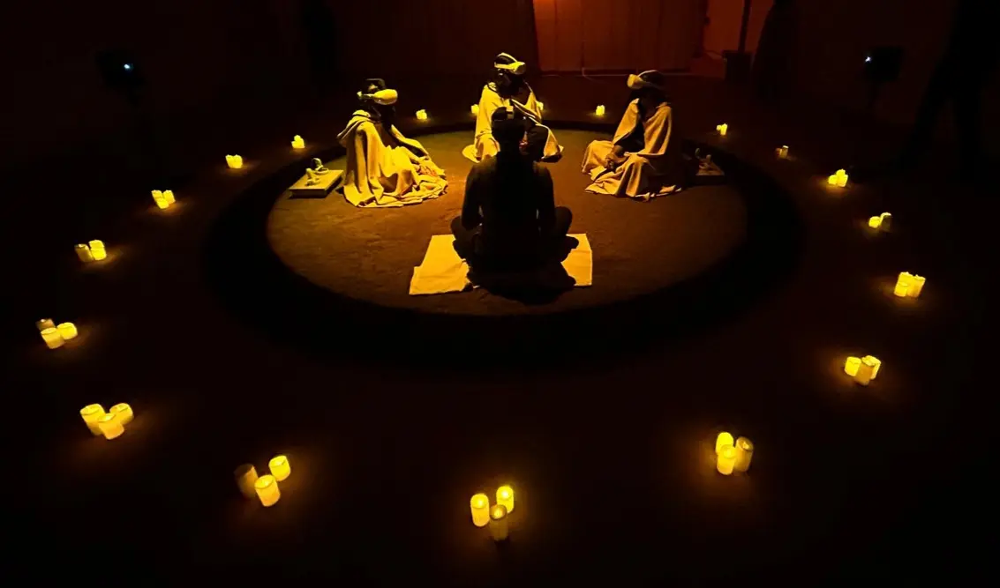

A City of Foxes
Expérience Immersive/ Réalité Virtuelle
Mon rôle : Sound Design, Composition musicale
A City of Foxes est une approche tendre et intime de la narration immersive en réalité virtuelle où les participants font la rencontre d'un renard philosophe qui s'interroge sur ce que signifie la fraternité en temps de guerre.

Cette expérience a été imaginée par Nihaarika Negi, une artiste indienne interdisciplinaire travaillant au niveau international, dont le travail commence par le corps et prend son envol à travers les médiums de la performance, de l'écriture, de la mise en scène et de la production.